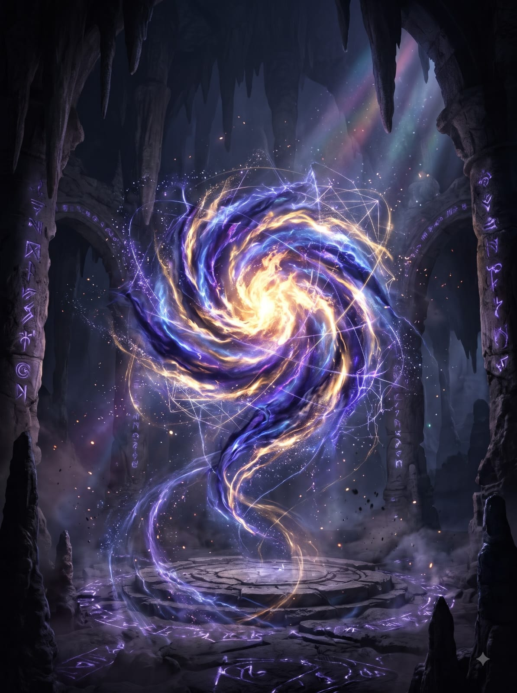
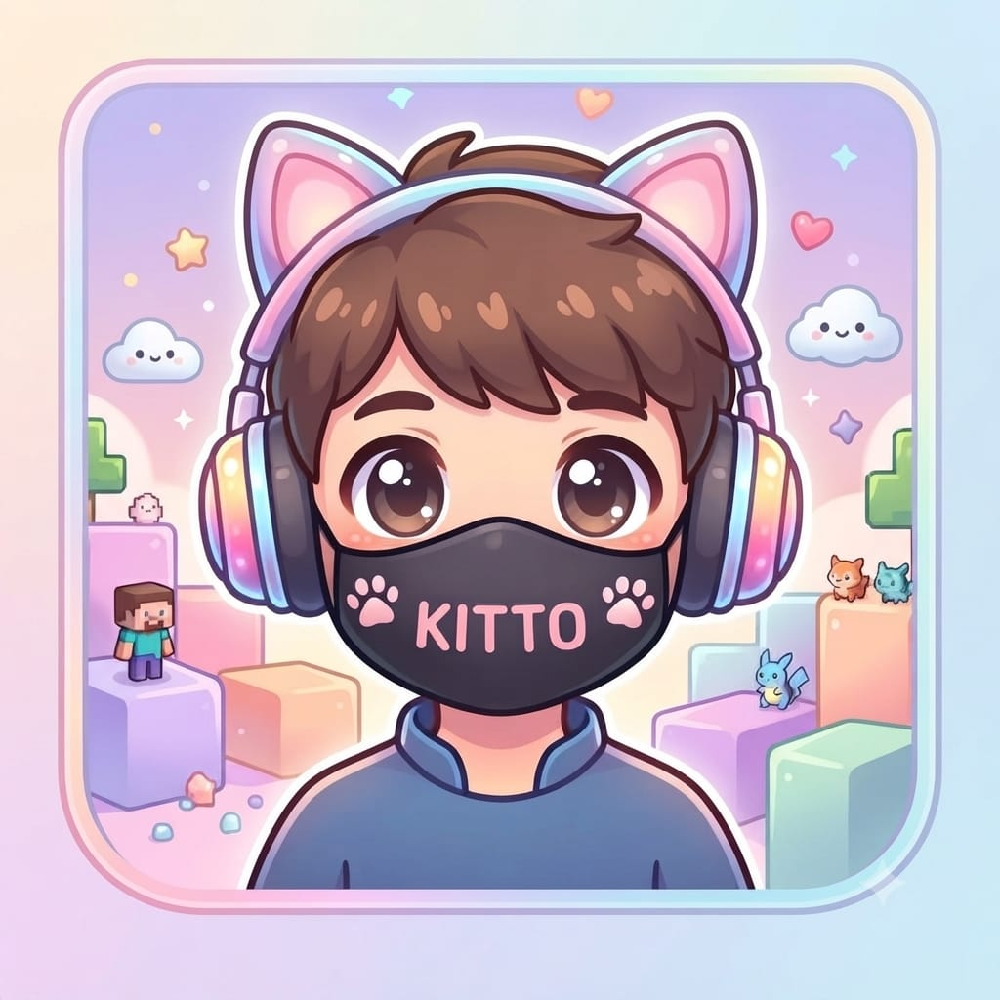
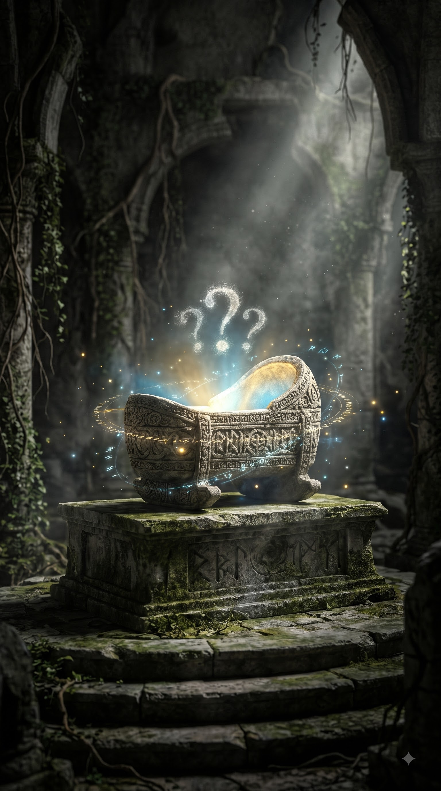

01 — SHINAA
An ancient, sentient force beyond the comprehension of the Council. Shinaa's awakening disturbs the balance of this era.

KittoSibipichli pyaar chhupa rakha hai?02 / THE DARK UNIVERSE

An ancient, sentient force beyond the comprehension of the Council. Shinaa's awakening disturbs the balance of this era.

Pure-hearted and resolute, S steps into the storm to protect the Vessel and unveil the truth.

An enigma of primordial mystery whose unknown origin holds the fate of the realm.